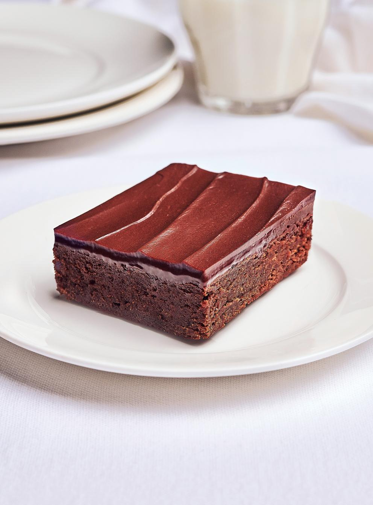

Recette de Brownie tout chocolat

BON BROWNIES
Ingredients
Brownie
170 g (6 oz) de chocolat noir, haché grossièrement
115 g (1/2 tasse) de beurre non salé, coupé en cubes
160 g (3/4 tasse) de sucre
Ganache
170 g (6 oz) de chocolat noir, haché
125 ml (1/2 tasse) de crème 35 %
15 ml (1 c. à soupe) de sirop de maïs
15 ml (1 c. à soupe) de beurre non salé, ramolli
Préparation
Brownie
Placer la grille au centre du four. Préchauffer le four à 165 °C (325 °F). Beurrer un moule carré de 20 cm (8 po) et le tapisser d'une bande de papier parchemin en la laissant dépasser sur deux côtés.
Dans un bol, au bain-marie ou au four à micro-ondes, fondre le chocolat avec le beurre. Laisser tempérer.
Ganache
Entre-temps, dans un bol, déposer le chocolat.
Dans une petite casserole, porter à ébullition la crème et le sirop de maïs. Verser sur le chocolat et laisser fondre 2 minutes sans remuer. Mélanger à la spatule jusqu’à ce que la ganache soit lisse et homogène. Incorporer le beurre. Laisser refroidir la ganache à la température ambiante jusqu’à ce qu’elle ait épaissi et qu’elle soit manipulable, soit de 1 à 2 heures.
Répartir la ganache uniformément sur le brownie. Couper en carrés. Le brownie tout chocolat se conserve 3 jours dans un contenant hermétique à la température ambiante.